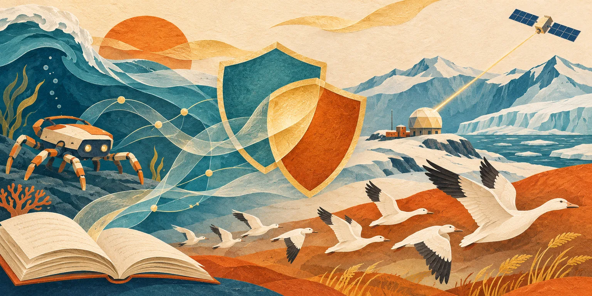

Independent daily digestFive stories worth your time
The Daily Curiosity
Better connections, changing conditions: robots borrow from crabs, AI revisits earlier layers, security platforms plan to combine, Arctic lasers refine satellite measurements, and wildlife rules respond to a smaller flock.

AI-generated editorial illustration · The Daily Curiosity. Conceptual artwork, not documentary imagery or a technical diagram.
STORY 01 · SUNY · Underwater robotics
Crab-inspired robots could take on dangerous work in the surf
Stony Brook and Case Western Reserve researchers are developing a tethered pair of robots to travel from the air into coastal waters and investigate possible unexploded ordnance on the seafloor. The project, supported by a $2.4 million Office of Naval Research grant, draws on the movements of crabs to cope with waves and currents that challenge conventional underwater vehicles. Flexible limbs could eventually support environmental monitoring as well as hazardous searches, but reliable operation remains a research challenge that will require physical testing.
Source published 2026-11-23 · Briefing date 2026-11-24
Google Research’s new explainer describes DeepCrossAttention, a method that lets a transformer selectively retrieve information from earlier layers instead of continually blending their outputs together. The underlying work was presented at ICML 2025; the November update explains its experiments and connections to newer approaches, rather than announcing a newly released model. Google reports that the method matched standard-transformer performance in up to five times fewer training steps on two language benchmarks, while increasing memory-bandwidth demands. The result points to a route toward more efficient training through better information routing, though those benchmark results do not establish equivalent gains for every production model.
Source published 2026-11-23 · Briefing date 2026-11-24
A proposed $43.9 billion deal joins device security to network access
CrowdStrike has agreed to acquire Zscaler in an all-stock transaction valued at approximately $43.9 billion, combining its endpoint protection business with Zscaler’s network and Zero Trust access tools. The companies argue that bringing device and connection data together would help secure AI agents as they move between applications and services. For enterprise buyers, the proposal signals further consolidation of security functions into large platforms, making integration plans and supplier concentration worth watching. The deal is not complete: closing is expected in the second half of CrowdStrike’s fiscal 2028, subject to Zscaler shareholder approval, regulatory approvals and other conditions, and the companies will operate independently until then.
Source published 2026-11-23 · Briefing date 2026-11-24
An Arctic laser sharpens the map beneath satellite science
NASA’s latest Earth Observatory feature describes its first operational next-generation satellite laser-ranging system, which officially debuted October 12 at Ny-Ålesund in Svalbard. The instrument sends thousands of laser pulses per second and detects returning photons to help determine satellite orbits and maintain the shared coordinate framework used to measure Earth. Its far-north position offers frequent views of polar-orbiting satellites, supporting the calibration behind measurements of ice, sea level and the planet’s changing shape. The advance is in the ground-based measurement infrastructure that makes observations comparable, rather than a new satellite launch.
Source published 2026-11-23 · Briefing date 2026-11-24
Fewer snow geese prompt a rethink of an expanded hunting season
New York’s Department of Environmental Conservation proposes ending the special spring snow-goose hunting season after the spring 2025 Greater Snow Goose estimate fell below the Atlantic Flyway’s management goal. The agency attributes the decline to a combination of additional harvest, spring disturbance and recent highly pathogenic avian influenza outbreaks. If adopted, the change would return the season’s closing date to March 10 while retaining regular-season hunting; public comments are open through January 19, 2027. The proposal illustrates how a conservation measure designed for overabundance can need revision when population conditions change.
Source published 2026-11-18 · Briefing date 2026-11-24